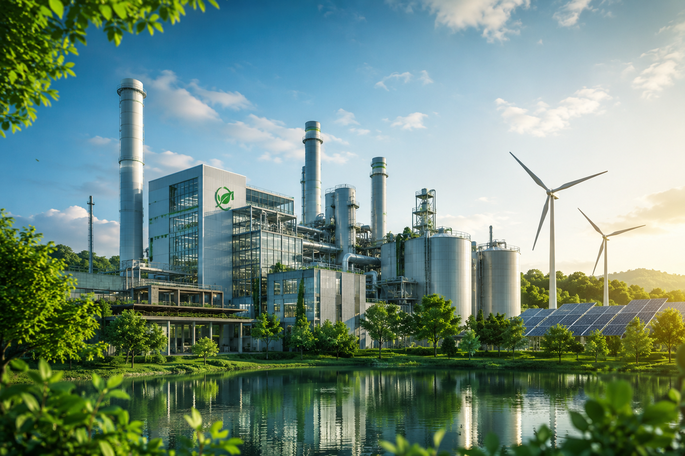

Pequenas mudanças geram grandes impactos
Muitas indústrias ainda causam grandes impactos ambientais através da poluição, desperdício de água e emissão de gases que prejudicam o planeta. Porém, diversas empresas estão investindo em energia renovável, reciclagem e tecnologias sustentáveis para reduzir esses impactos e preservar os recursos naturais. A sustentabilidade industrial é importante porque ajuda a proteger o meio ambiente e garante um futuro melhor para as próximas gerações.
Práticas Sustentáveis
- Uso de energia solar e eólica
- Reciclagem de materiais industriais
- Redução da emissão de poluentes
- Economia de água nos processos industriais
- Reaproveitamento de resíduos